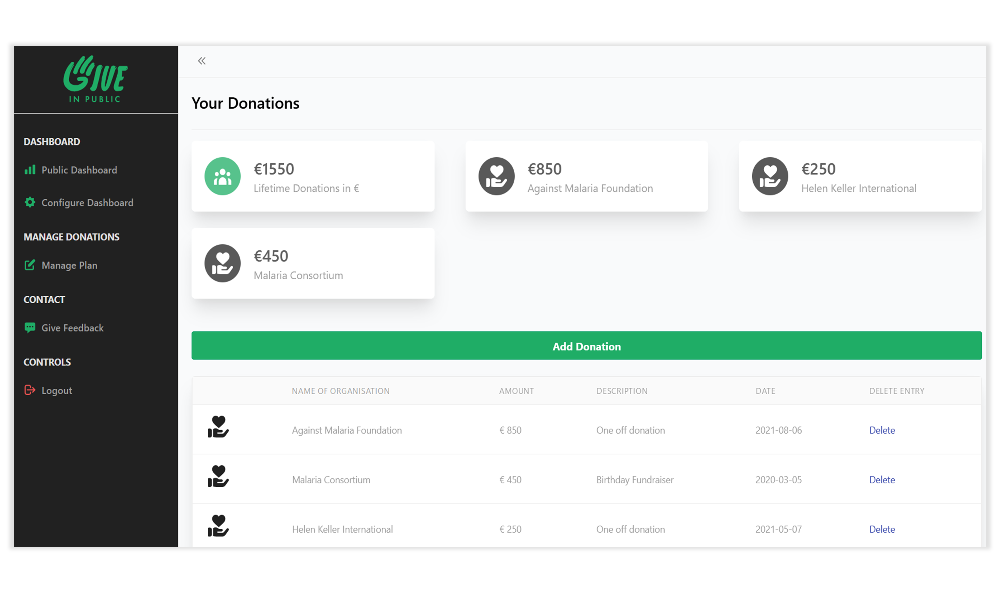
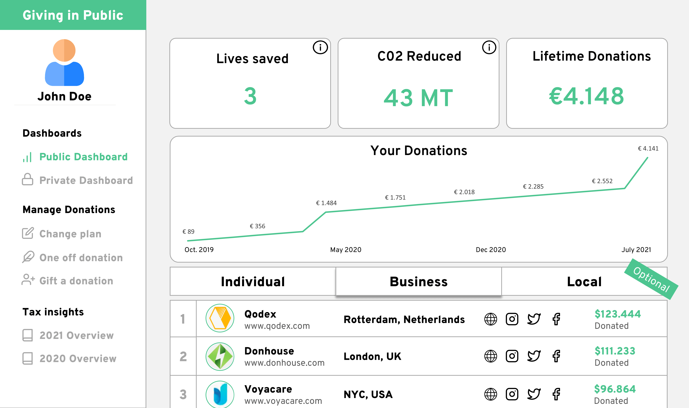

How it works
Add Donations
1
Keep track of all your donations in one place.

Create your personal impact dashboard
2
Visualize your impact in your own dashboard

Make your impact public
3
Share your unique impact dashboard with others to start conversations and inspire altruism